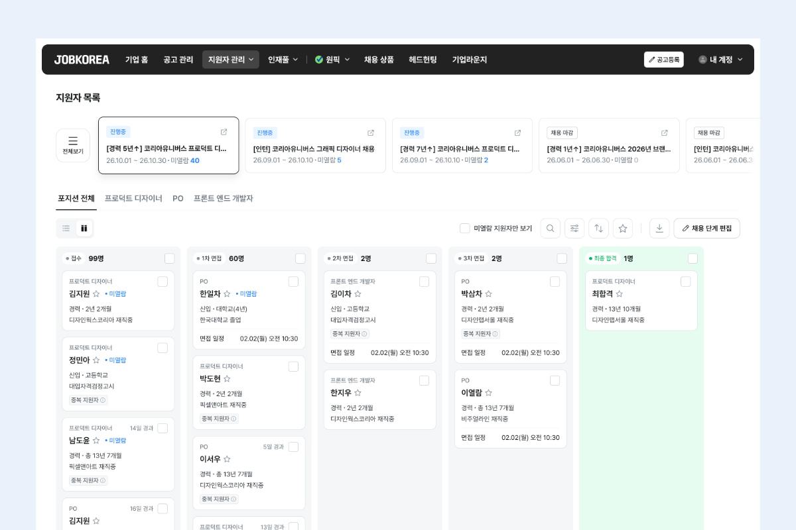

About
제품을 만들다 보면 해결할 수 있는 문제보다 먼저 해결해야 할 문제를 고르는 일이 더 어렵습니다. 고객에게 필요한 변화는 무엇인지, 지금 이 문제에 시간과 자원을 써야 하는지, 무엇을 확인하면 다음 결정을 내릴 수 있을지. 제품을 직접 설계하고 운영하면서, 팀과 방향을 정하면서 반복해 온 질문들입니다.
구독 플랫폼과 채용 플랫폼에서 신규 서비스 출시, 이용 경험 개선, AI 제품화와 레거시 서비스 리빌딩을 맡아 왔습니다. 제품을 직접 설계하고 운영하는 IC(Individual Contributor)이자, 매트릭스 조직에서 PO 기능조직과 여러 직군이 함께하는 목적조직을 이끌어 온 매니저입니다.
IC로서는 ‘지금 해결해야 할 문제인가’에 집중합니다. 고객이 겪는 어려움과 사업의 목표를 함께 보고, 해결할 문제와 우선순위를 정합니다. 어떤 변화가 필요한지, 무엇부터 확인할지 구체화하고, 직접 설계하고 운영하며 얻은 근거를 다음 판단에 반영합니다.
매니저로서는 구성원이 스스로 판단하고 일을 완수할 수 있는 환경을 중요하게 생각합니다. 목표와 판단의 이유를 명확히 설명하고, 서로의 역할과 완료 기준을 맞춥니다. 1:1과 과제별 피드백으로 실행이 막히는 지점을 함께 풀고, 회고에서 얻은 배움을 다음 업무에 반영하며 구성원의 성장과 팀의 과제 완수를 돕습니다.
교육 콘텐츠에서는 배움을, 구독 서비스에서는 지식과 콘텐츠의 발견을, 채용 서비스에서는 일과 경력에 대한 선택을 도왔습니다. 분야는 달랐지만, 사람들이 무엇에 가치를 느끼고 어떤 경험을 다시 찾는지에 관심을 두고 일해 왔습니다. 앞으로도 고객에 대한 이해를 넓혀가며, 사람들의 일상에 쓸모와 즐거움을 더하는 제품과 서비스를 만들어가고 싶습니다.
Projects
제품의 방향을 정하고, 팀과 실행하며 내린 판단을 담은 주요 프로젝트입니다.
How I Work
무엇에 집중할지 정하고, 팀의 방향을 맞춥니다.
고객에게 필요한 변화와 사업의 목표, 실행에 필요한 자원을 함께 놓고 우선순위를 판단합니다. 이미 진행 중인 계획도 현재의 문제에 맞는지 다시 살피고, 지금 할 일과 뒤로 미룰 일을 구분합니다. 선택한 방향의 이유와 감수할 제약을 설명해, 여러 직군이 같은 목표를 향해 움직이도록 합니다.
불확실한 것은 확인할 수 있는 크기로 만듭니다.
무엇을 알고 무엇을 아직 모르는지 구분하고, 다음 결정을 위해 필요한 근거를 정합니다. 운영 실험과 PoC, 직접 테스트처럼 상황에 맞는 방법으로 확인한 뒤 제품의 범위와 실행 순서를 조정합니다. 기대했던 결과와 실제로 관찰한 변화를 구분하고, 확인하지 못한 부분도 다음 판단에 남깁니다.
구성원이 판단하고 완수할 수 있는 환경을 만듭니다.
목표와 판단의 맥락을 명확히 전달하고, 각자의 전문성으로 해결할 여지를 둡니다. 일이 막히면 역할 간 의존성, 운영 부담, 공유 방식에서 원인을 함께 찾습니다. 1:1과 과제 피드백에서는 구성원이 어려워하는 판단을 함께 검토하고, 회고에서 발견한 문제는 다음 업무의 방식에 반영합니다.
AI 활용을 실제 업무의 변화까지 연결합니다.
반복 작업과 정보의 단절을 발견하면 요구사항을 정하고 AI로 필요한 도구를 직접 구현합니다. 결과의 누락과 예외를 검수하고, 동료가 사용할 수 있도록 배포와 사용 안내까지 마련합니다. 문서 이관과 문의 분석에서도 도구를 만드는 데서 멈추지 않고, 실제 활용과 처리 역할의 변경까지 연결했습니다.